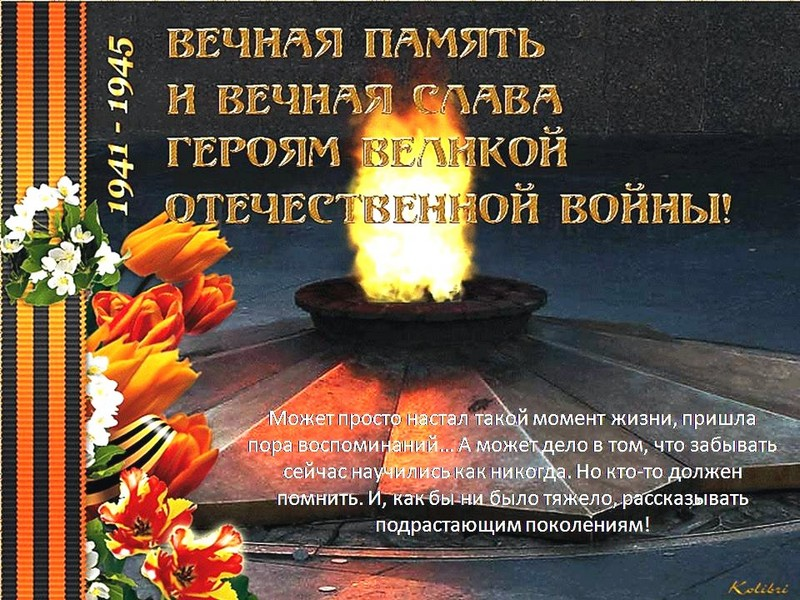

Есть события, над которыми не властно время, которые навсегда остаются в памяти народной, таким событием стала Великая Отечественная война, небывалая по своим масштабам, массовому героизму на полях сражений, лишениям, самоотверженному труду в тылу, и невыразимому трагизму. Эта Победа - определяющая веха в истории нашей страны.
День Победы – один из самых важных российских праздников: 9 мая мы забываем обо всех разногласиях и вспоминаем, что мы единый народ. Этот праздник касается каждого жителя страны, он объединяет поколения и заставляет каждого почувствовать себя частью чего-то важного.
Трагизм и величие, скорбь и радость, боль и память…
Всё это – Победа. Ничто не может заменить её – ни годы, ни события. Не случайно День Победы – это праздник, который с годами не только не тускнеет, но занимает всё более важное место в нашей жизни. В этот день и радуются, и плачут, и вспоминают.
Для нашей страны этот день наполнен особым смыслом. Это – священная память о погибших на полях сражений. Это – наша история, наша боль, наша надежда…
Основной долг всех последующих поколений нашей страны - долг перед поколением победителей - сохранить историческую память о Великой Отечественной войне, не оставить в забвении ни одного погибшего солдата, юных патриотов, отдать дань благодарности за героический подвиг в Великой Отечественной войне живым ветеранам войны и трудового фронта.
